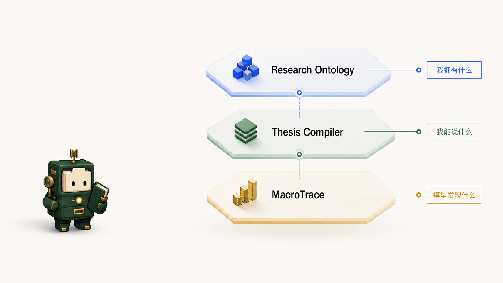
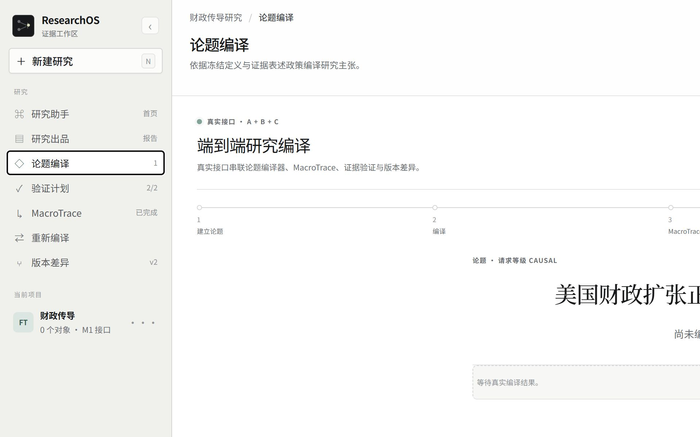
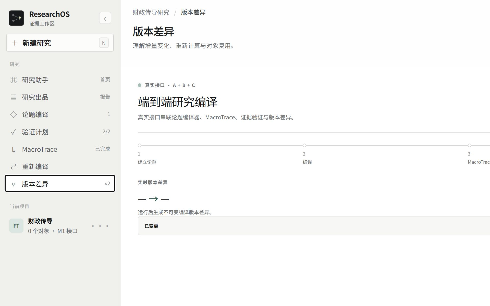
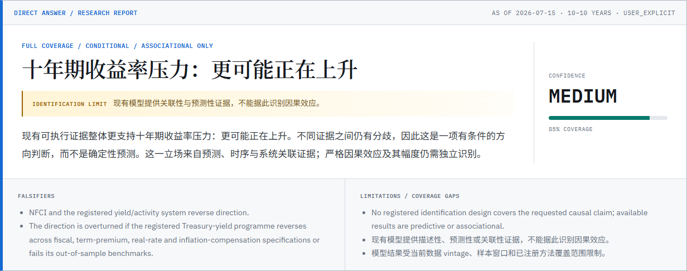
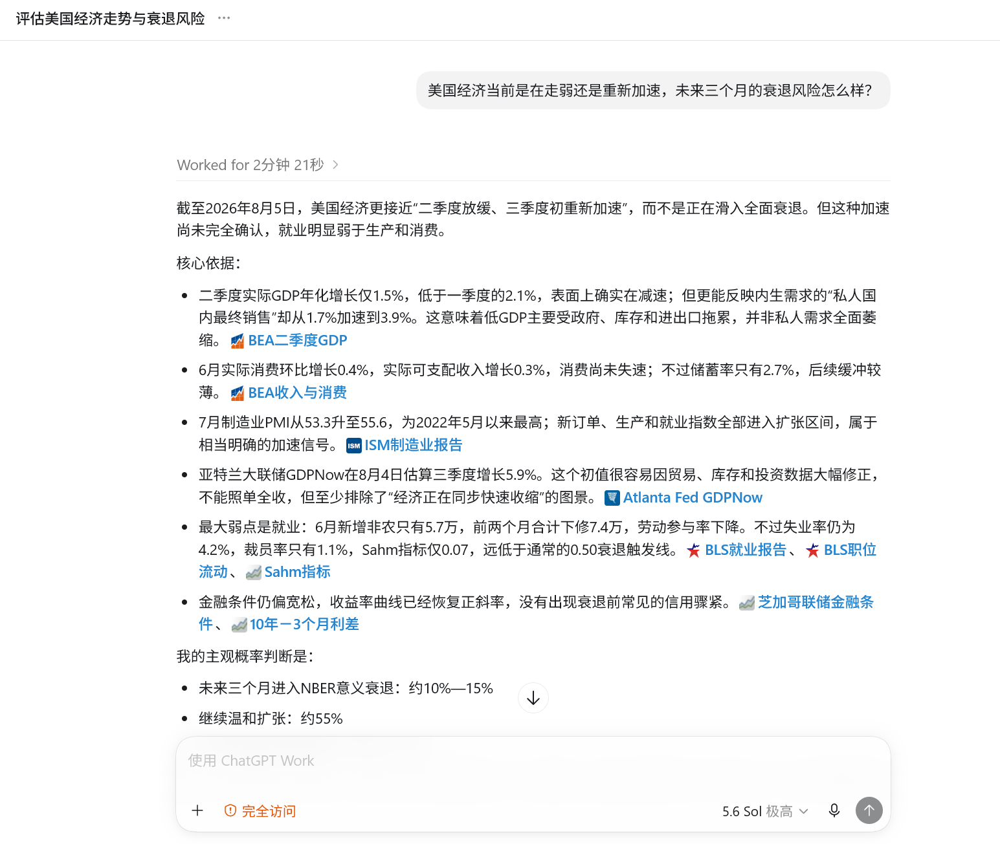
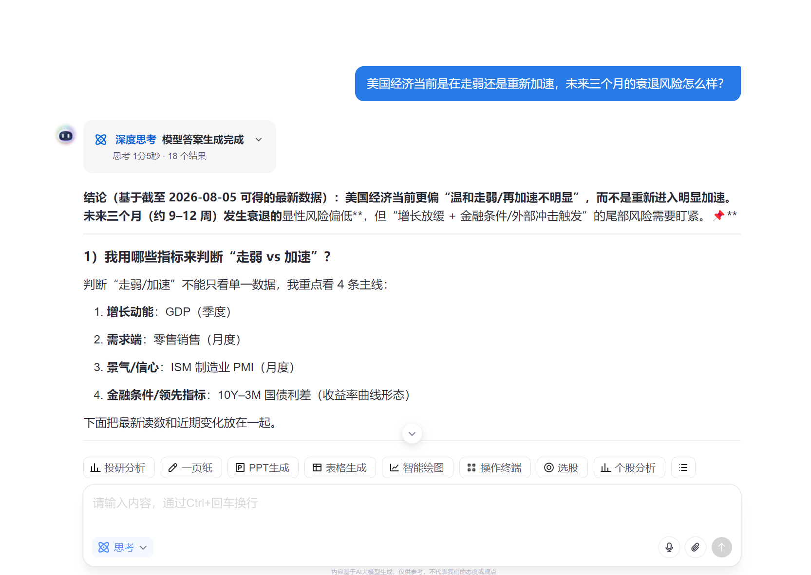
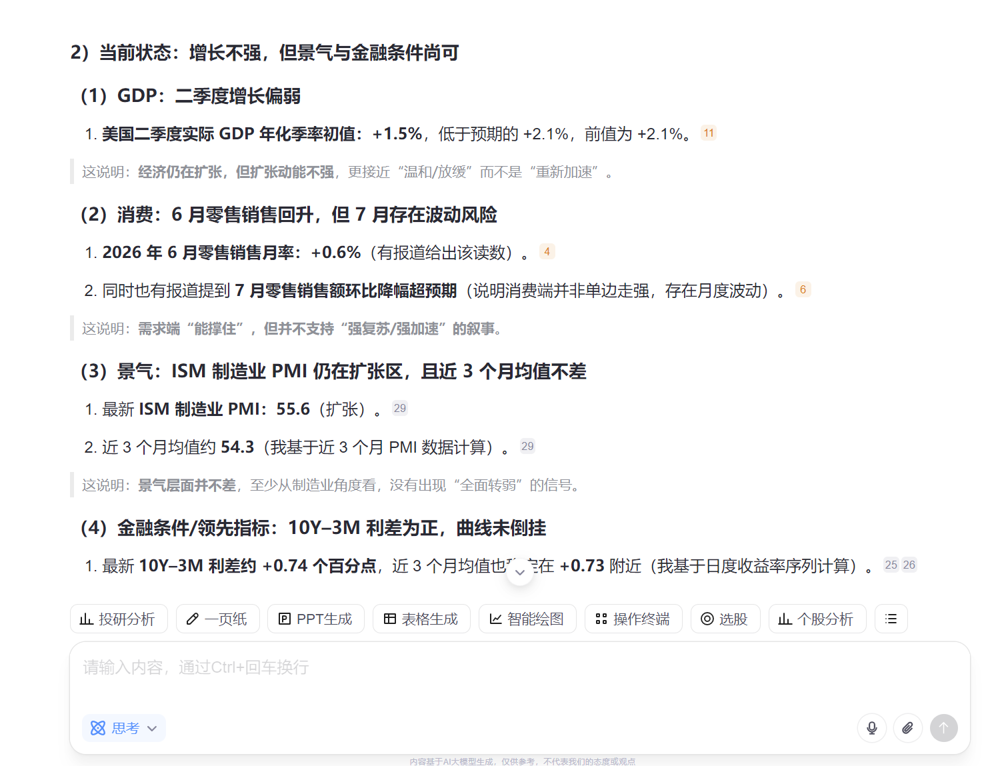
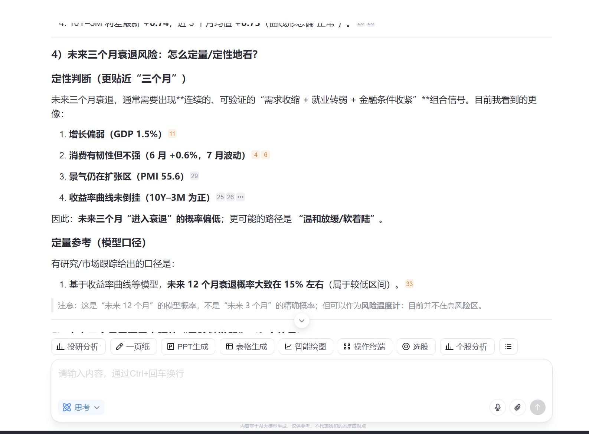
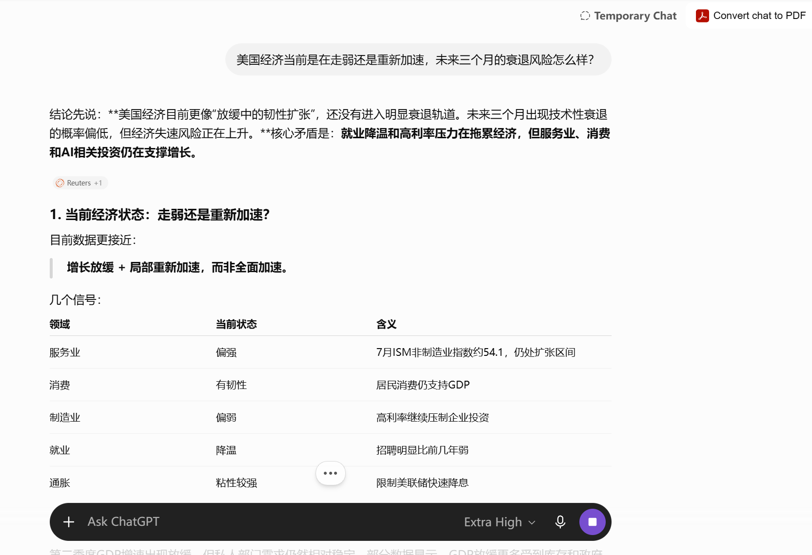
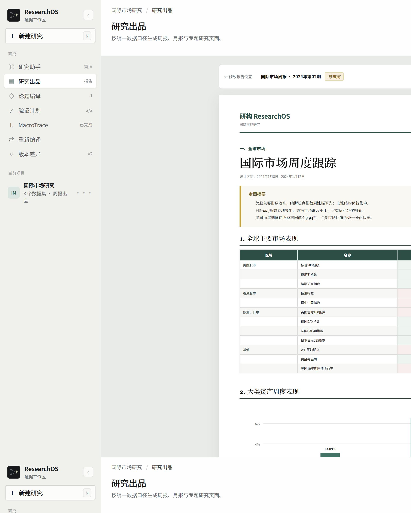

Research Ontology
管理研究对象、精确版本、资料与引用片段。
- 对象身份稳定
- 历史版本可回看
- 引用定位到片段
交接：Context Pack

把金融研究从“搜索答案”，升级为“生产可验证结论”
把提问、资料、数据、命题、实证、修正与报告，串成一条可追溯、可复核、可复现的研究生产链。
新闻、财报、政策、行情每天涌入；研究对象、模型、证据和结论却分散在不同工具与版本里。
管理研究对象、精确版本、资料与引用片段。
把自然语言判断编译成可验证命题和结论资格。
运行已注册模型、诊断和稳健性检查。
输入的是开放研究问题，不是让模型直接生成最终答案。
问题与研究模块、资料和数据处于同一产品空间，后续每一步都能回到原始上下文。
资料类型、时间、来源与引用关系被保留，为后续命题编译提供可复核上下文。
工作流、节点、变量、模型和参数形成可追踪的执行图，而不是临时生成一段不可审计代码。
输出不仅有结果，还保留规格、变量、诊断、稳健性与 provenance，供结论编译器判断措辞资格。

“政策变化导致风险资产上涨。”
模型只提供关联性与预测性证据，因果识别条件不成立。
保留 Fixture / Offline Replay / Real API 模式，Partial 与 Failed 状态不被隐藏。
“在当前样本与设定下，两者呈现关联；因果关系尚不能由本次结果识别。”







三个 Agent 都能生成有信息量的回答；但从这些截图中，研究对象版本、注册模型执行、Evidence Bundle 与结论资格本次回答未展示。ResearchOS 把这些环节连成可以复核和重放的链路。

ResearchOS 不替研究员下结论；它让结论有出处、有版本、有模型、有边界。